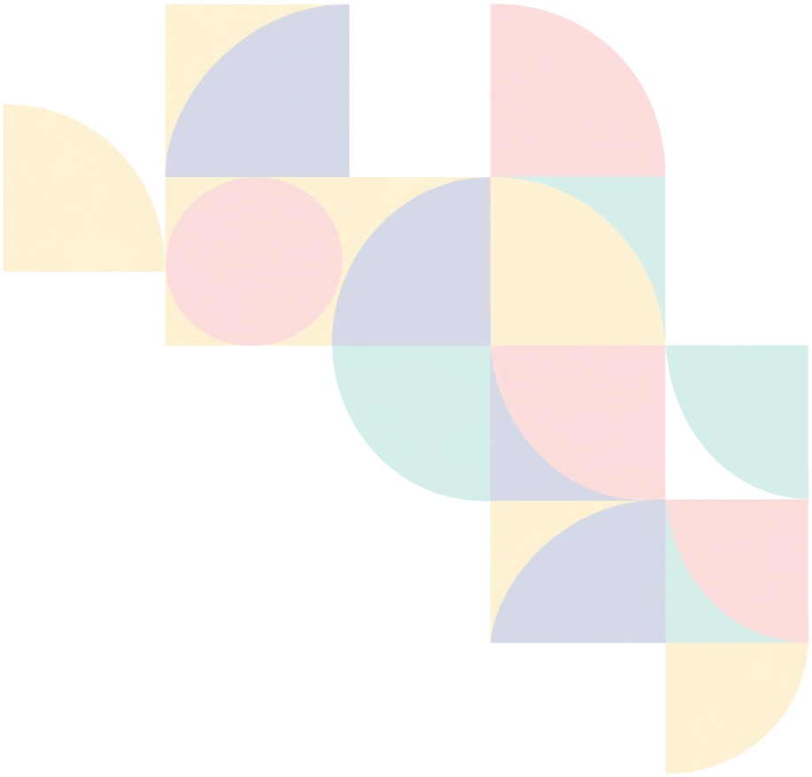
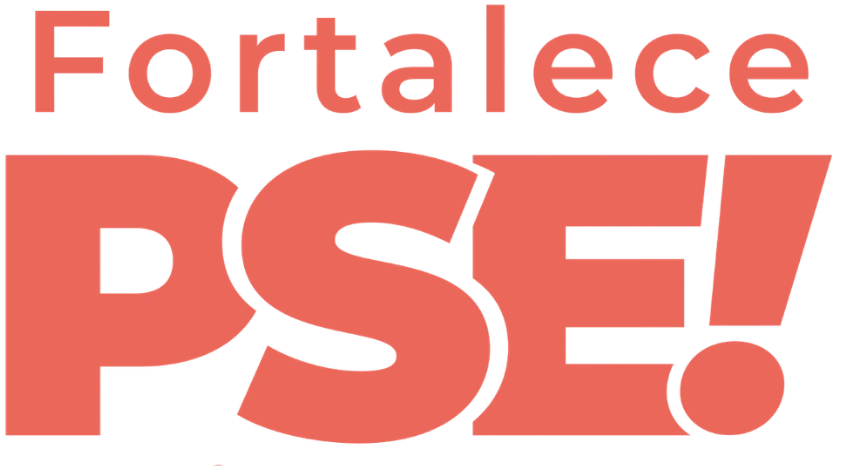
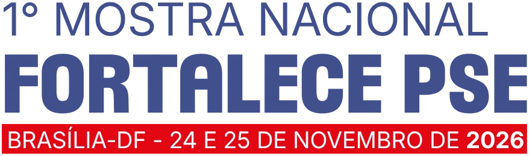

O BRASIL QUE SE FORMA EM REDE:
Uma experiência interativa da 1ª Mostra Nacional para revelar os estudantes que constroem, no cotidiano, a articulação entre saúde, educação e participação social nas universidades.
Toque em um estado para conhecer suas histórias